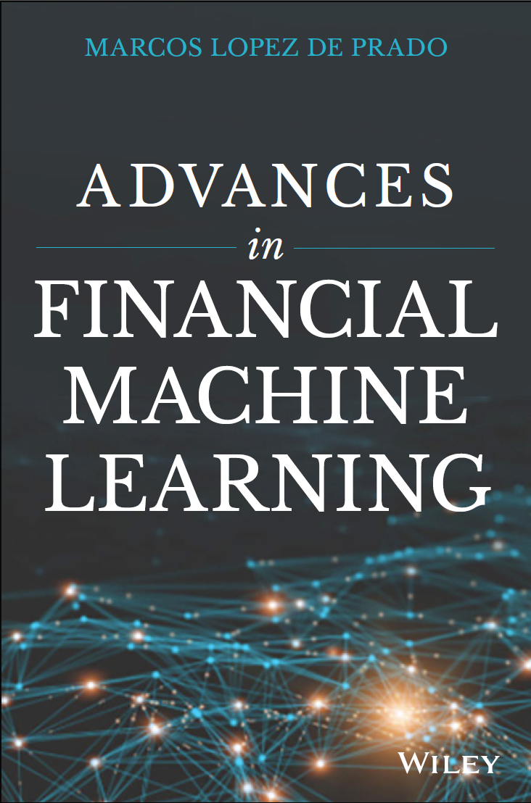

|
WELCOME!
 Machine learning (ML) is changing virtually every aspect of our lives. Today ML
algorithms accomplish tasks that until recently only expert humans could
perform. As it relates to finance, this is the most exciting time to adopt a
disruptive technology that will transform how everyone invests for generations.
This website explains scientifically sound ML tools that have worked for me over
the course of three decades, helping me to manage
large pools of funds for some of the most
demanding institutional investors.
ON THE SOCIAL IMPACT OF QUANTS
Read Frank Fabozzi's Editorial for
The Journal of Portfolio Management:
Quants can be Knights.
CONTACT
Personal e-mail: mldp(at)QuantResearch(dot)org
For regular updates,
follow me on
Twitter.
DISCLAIMER
The statements made in this communication are strictly those of
the author and do not necessarily represent the views of the entities and
agencies he is affiliated with. No investment advice or particular course of action is recommended.
All rights reserved. © 2010-2026 Marcos López de Prado.
|